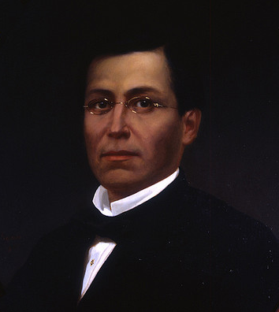
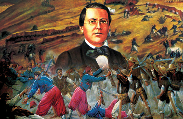
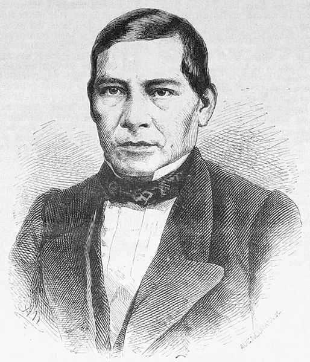
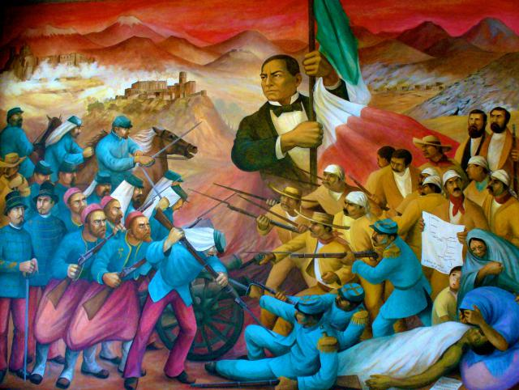
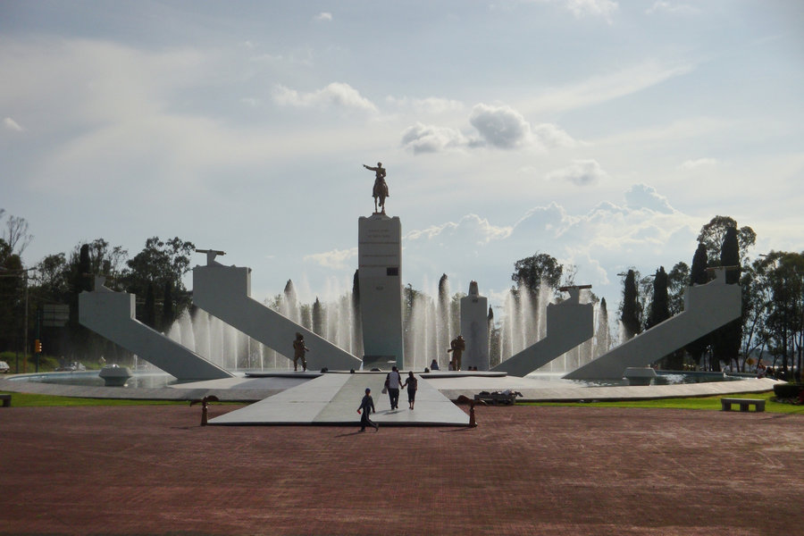
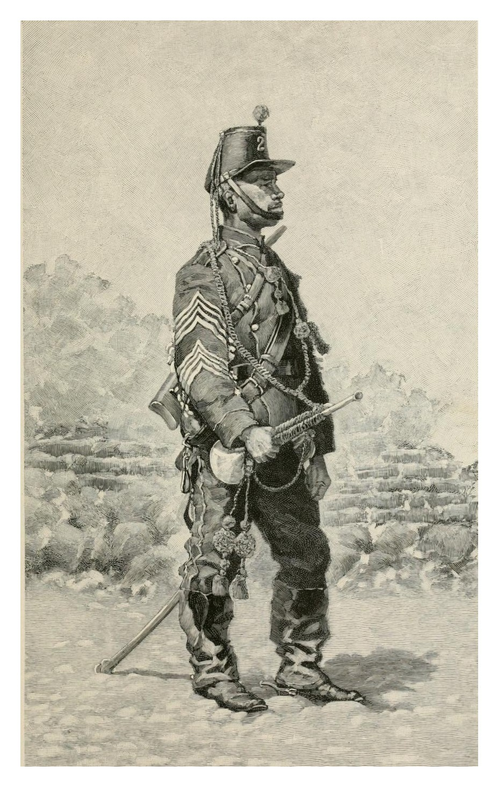
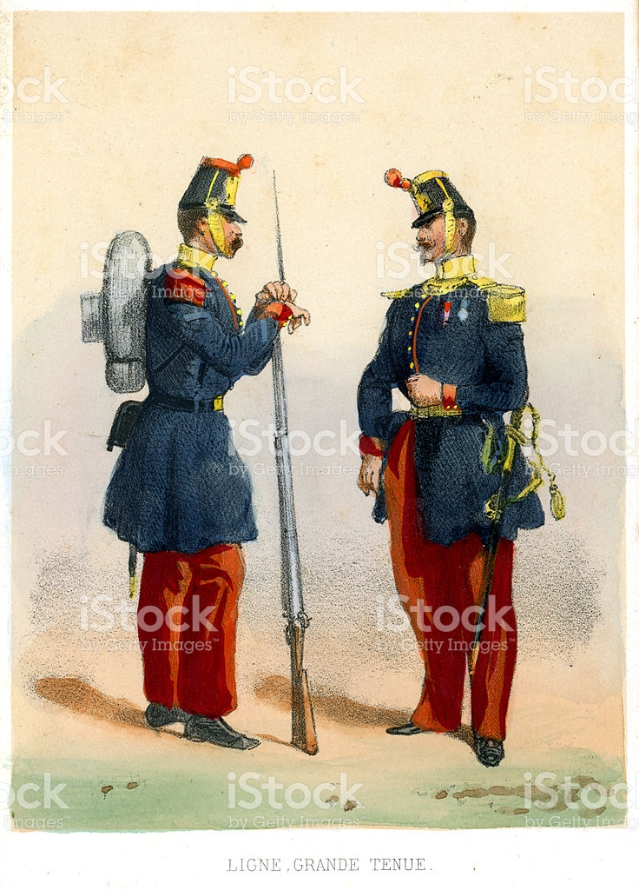

¿Qué pasó el 5 de Mayo?
Un combate librado el 5 de mayo de 1862 en las cercanías de la ciudad de Puebla, entre los ejércitos de la República Mexicana, bajo el mando de Ignacio Zaragoza, y del Segundo Imperio Francés, dirigido por Charles Ferdinand Latrille, conde de Lorencez, durante la Segunda Intervención Francesa en México, cuyo resultado fue una victoria importante para los mexicanos ya que con unas fuerzas consideradas como inferiores lograron vencer a uno de los ejércitos más experimentados y respetados de su época.
Pese a su éxito, la batalla no impidió la invasión del país, aunque sí que sería la primera batalla de una guerra que finalmente México ganaría. Los franceses regresarían al siguiente año, con lo que se libró una segunda batalla en Puebla en la que se enfrentaron 35 000 franceses contra 29 000 mexicanos (defensa que duró 62 días) y lograrían avanzar hasta la Ciudad de México, lo que permitió establecer el Segundo Imperio Mexicano. Finalmente, ante la incapacidad de consolidar un imperio y después de perder 11 000 hombres debido a la actividad guerrillera que nunca dejó de subsistir, los franceses se retiraron incondicionalmente del país en el año 1867.
¿Que más pasó?
En octubre de 1861, Francia, Inglaterra y España suscribieron la Convención de Londres, en la cual se comprometieron a enviar contingentes militares a México para reclamar sus derechos como acreedores por una deuda que ascendía a alrededor de 80 millones de pesos, de los que aproximadamente 69 millones corresponderían a Inglaterra, 9 millones a España y 2 millones a Francia.
El contingente europeo estaba conformado como sigue:
España: 6000 hombres al mando del General Juan Prim.
Francia: 3000 hombres dirigidos por el Contraalmirante Edmond Jurien de la Gravière.
Reino Unido: 700 marines bajo el comando del Comodoro Dunlop

PAOLA CONSTANZA ELGUEA PEREZ
¿Cuál fue el conflicto?
En octubre de 1861, Francia, Inglaterra y España suscribieron la Convención de Londres, en la cual se comprometieron a enviar contingentes militares a México ya que este tenía una gran deuda de 80 millones de pesos, aproximadamente eran 69 millones para los ingleses, 9 millones para los españoles y 2 millones para Francia
Más información
Existieron causas aparentes y causas que no lo fueron, o simplemente excusas, pero todos los aspectos mencionados fueron causas de la Batalla de Puebla; era claro que la República de México se encontraba sumida en crisis y tenía una deuda con Francia, España e Inglaterra; deuda que por la crisis, Benito Juárez, presidente de la época decidió no pagar por el momento y solicitar una tregua de 2 años para pagarla.
Esta decisión de no pagar por el momento, disgustó a los acreedores de la deuda y decidieron agruparse para invadir a la Republica de México y cobrarse sus deudas, adicionalmente, cada uno de estos 3 países tenían intereses mas allá de la deuda; tenían intereses económicos, mineros y de expansión de sus negocios, también de colonización de territorios.

PAOLA CONSTANZA ELGUEA PEREZ
Héroes
Ignacio Zaragoza
Ignacio Zaragoza Seguin
(24 de marzo de 1829 - 8 de septiembre de 1862) fue un militar mexicano reconocido como el héroe de la Batalla de Puebla, que tuvo lugar el 5 de mayo de 1862, cuando el ejército mexicano derrotó al ejército francés de élite al mando de Charles Ferdinand Latrille (Conde de Lorencez), considerado en su momento el mejor del mundo.

"Las armas nacionales se han cubierto de Gloria"

Benito Juarez
Benito Pablo Juárez García (San Pablo Guelatao, Oaxaca, 21 de marzo de 1806 – Ciudad de México, 18 de julio de 1872) fue un abogado y político mexicano, de origen indígena (de la etnia zapoteca), presidente de México en varias ocasiones, del 18 de diciembre de 1857 al 18 de julio de 1872.1
Se le conoce como el «Benemérito de las Américas».Es célebre su frase:
«Entre los individuos, como entre las naciones, el respeto al derecho ajeno es la paz»
.

"El respeto al derecho ajeno es la paz"

PAOLA CONSTANZA ELGUEA PEREZ
Monumentos
Monumento a La Victoria 5 de Mayo
En la Zona Histórica de los Fuertes hay varias atracciones que vale la pena visitar, la verdad es que para visitar todas si necesitas un día entero, o hasta más. Y es que este lugar cuenta con un valor histórico, patriótico y cultural de gran importancia.
Justo antes de llegar a los Fuertes, uno pasa por este monumento, y muchas veces pasa casi desapercibido, pero no debe ser así ya que es de gran importancia. El Monumento a la Victoria (5 de mayo) fue hecha por el escultor y pintor mexicano Ernesto Tamariz.
Recibe su nombre debido a que aquí el ejercito mexicano libró una poderosa batalla contra el ejercito francés, durante la Segunda Intervención Francesa el 5 de mayo de 1862. Dicha batalla fue liderada por el General Ignacio Zaragoza, que estaba a cargo del Ejercito de Oriente. La batalla fue ganada por el ejercito mexicano, lo que llenó de orgullo al país, y sobre todo a la gente de Puebla.
Imagen

Monumento a Ignacio Zaragoza
Cuando uno viene llegando a la Zona de los Fuertes lo primero que llama la atención es el monumento que está justo en medio de la carretera. Muchos sólo se quedan impactados por su belleza toman foto y se van, pero hay que saber que éste es un monumento muy representativo, históricamente hablando, ya que está dedicado a Ignacio Zaragoza.
Ignacio Zaragoza es uno de los héroes de la batalla del 5 de mayo, librada contar el ejercito francés en 1862. Él era el general del Ejercito de Oriente, que resultó triunfador en esta batalla.
El 5 de mayo de 1976 Ignacio Zaragoza fue nombrado benemérito de la patria, por su destacada participación durante la Segunda Intervención Francesa. Y para quienes no lo saben, es por este personaje que esta ciudad lleva el nombre oficial de "Puebla de Zaragoza".
El monumento a este héroe de la patria es una enorme fuente que en las noches se pinta de luces, haciendo lucir hermosa esta parte de la ciudad. Un lugar que vale la pena visitar antes o al salir de la Zona de los Fuertes
Imagen

PAOLA CONSTANZA ELGUEA PEREZ
Museos
MUSEO INTERACTIVO DE LA BATALLA DEL 5 DE MAYO
Una de las más grandes batallas que ha librado el país tuvo lugar en la ciudad de Puebla, la batalla del 5 de mayo de 1862. En la zona de los fuertes, en el mismo escenario del pasado, se ubica el museo interactivo.
El recorrido por el museo utiliza la tecnología más puntera para narrar las acciones militares y la biografía de héroes nacionales como Negrete, Díaz y Zaragoza. Pantallas táctiles, proyecciones en 3-D y contenidos interactivos descargables en dispositivos ofrecen una experiencia única al visitante.
Imagen

Mas informacion
Si quieres saber más de éste museo haz clic aquí Museo Interactivo


PAOLA CONSTANZA ELGUEA PEREZ